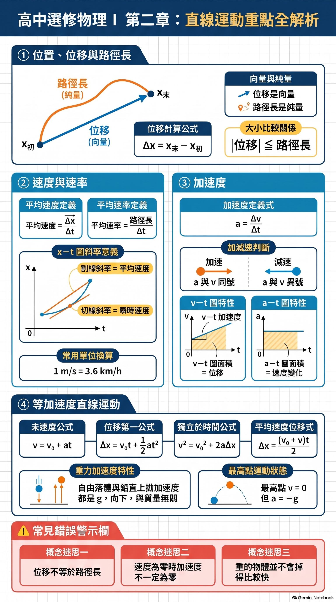

2-1
位置、位移與路徑長
- 位移 Δx = x末 − x初（向量，只看起點與終點）；路徑長是實際走過的長度（純量）
- |位移| ≤ 路徑長，單向不折返時相等；位置隨原點改變，位移不變
4資訊圖表重點
點一下放大全圖
2互動視覺化：數線上的位移與路徑長
拖曳三個點：綠色起點 → 黃色折返點 → 粉紅終點。移動原點時，各點的位置坐標會變，位移不變。
1NotebookLM 簡報
3隨堂評量
2-2
速度與速率
- 平均速度 = 位移 ÷ 時間；平均速率 = 路徑長 ÷ 時間；1 m/s = 3.6 km/h
- x–t 圖：割線斜率 = 平均速度，切線斜率 = 瞬時速度
1NotebookLM 簡報
4資訊圖表
點一下放大全圖
2互動視覺化：割線變切線／平均速率
把 Δt 一路縮小（2 → 2.1 → 2.01 → 2.001），割線斜率會趨近切線斜率，也就是瞬時速度。
3隨堂評量
2-3
加速度
- a = Δv/Δt；a 與 v 同號加速、異號減速（負的加速度不一定是減速）
- v–t 圖：斜率 = 加速度，面積 = 位移（上方為正、下方為負）；a–t 圖面積 = 速度變化
1NotebookLM 簡報
4資訊圖表
點一下放大全圖
2互動視覺化：v–t 圖的斜率與面積
上下拖曳 v–t 圖上的白點改變速度；下方 x–t 圖同步畫出位置。藍色面積為正位移、粉紅色為負位移。
3隨堂評量
2-4
等加速度直線運動
- v = v₀ + at；Δx = v₀t + ½at²；v² = v₀² + 2aΔx；Δx = (v₀ + v)t/2（缺哪個量就選不含它的公式）
- 自由落體與鉛直上拋的加速度都是 g（取 10 m/s²，向下）；最高點 v = 0 但 a = −g
4資訊圖表重點
點一下放大全圖
2互動視覺化：運動模擬器
1NotebookLM 簡報
3隨堂評量
★
總複習
- 本章重點總整理、形成性評量 10 題（附答案）、完整資訊圖表與教學影片
1NotebookLM 簡報：總整理與形成性評量
▶NotebookLM 教學影片
4完整資訊圖表

點一下放大